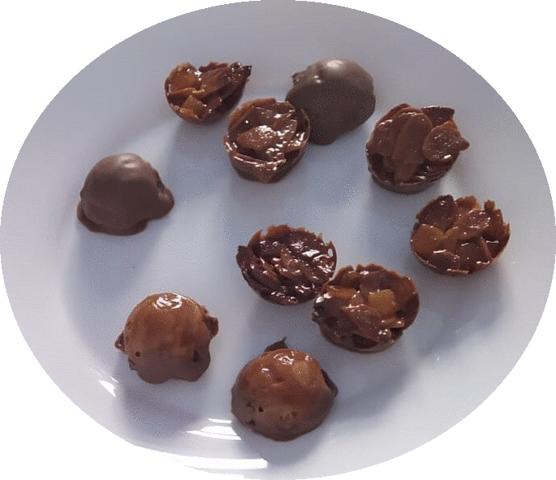

The best cooking in your kitchen: French and worldwide inspiration

Florentins: a (likely) French pastry. No eggs nor flour, but a marvellous honey taste, and crunchy texture! You'll need chocolate, almonds, honey and candied fruits to make these little pastries, perfect for tea time.